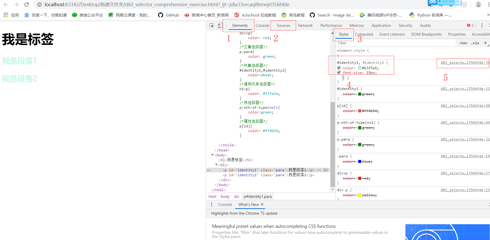
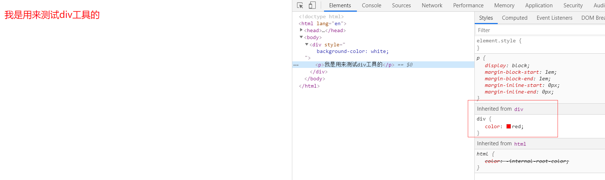
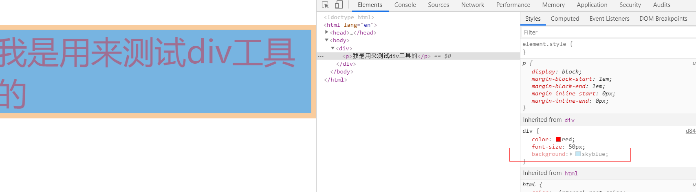

原文出处:本文由博客园博主心悦君兮君不知-睿提供。
原文连接:https://www.cnblogs.com/ruigege0000/p/11257442.html
原文连接:https://www.cnblogs.com/ruigege0000/p/11257442.html
一、谷歌开发者工具其他特性（谷歌浏览器快捷键F12）

（1）元素选择， 在里面我们可以看到某些行的具体代码
（2）查看源代码
（3）该元素的样式显示，我们可以看到我们选中的元素的具体样式属性，可以在里面进行更改，但不会修改源代码，只会当做临时查看
（4）具体的样式代码
（5）该行代码所在的文件的位置
二、CSS三大特性之继承性
定义：给父元素设置一些属性，子元素也可以使用
例如：谷歌开发者工具也可以给出验证，p标签继承了div标签的属性
<style>
div{
color: red;
}
</style>
</head>
<body>
<div>
<p>我是用来测试div工具的</p>
</div>

3.注意：
（1）并不是所有的属性都是可以继承的，只有以color/font-/text-/line开头的属性才可以继承
如例子中所示，这一属性是灰色的，代表属性并非继承来的

（2）在CSS的继承中不仅仅是儿子可以继承，只要是后代都可以继承
div{
color: red;
font-size: 50px;
background: skyblue;
}
.......省略代码..........
<div>
<ul>
<li>
<p>我是多层次的</p>
</li>
</ul>
</div>
（3）CSS继承性的特殊性
i.a标签的文字颜色和下划线是不能继承的
ii.h标签的文字大小是不能继承的
div{
color: red;
text-decoration: none;
font-size: 30px;
}
......省略代码........
<div>
<a href="#">测试a标签</a>
<h1>
我是用来测试h标签的
</h1>
</div>
解释：a标签颜色不是红的而且带下划线，h标签的字体大小也不是我们设置的
4.作用：用来设置网页上的共性的格式，简约代码。
二、源码：
d84_inherit_character.html
地址:
https://github.com/ruigege66/HTML_learning/blob/master/d84_inherit_character.html
2.CSDN：https://blog.csdn.net/weixin_44630050（心悦君兮君不知-睿）
3.博客园：https://www.cnblogs.com/ruigege0000/
4.欢迎关注微信公众号：傅里叶变换，后台回复“礼包”获取Java大数据学习视频礼包